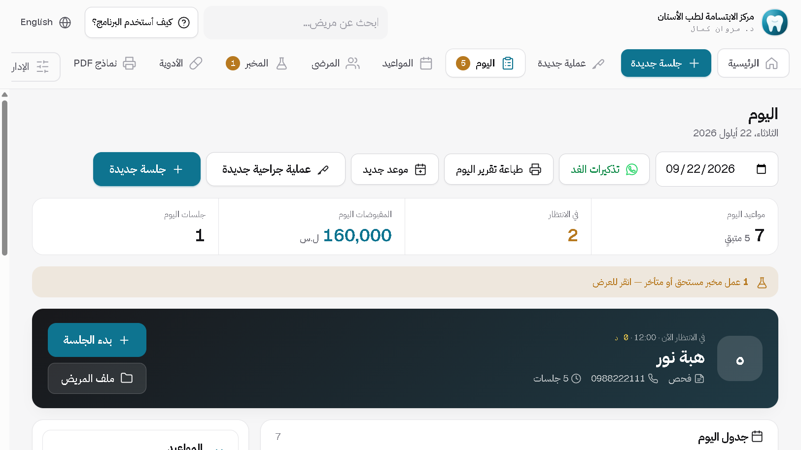
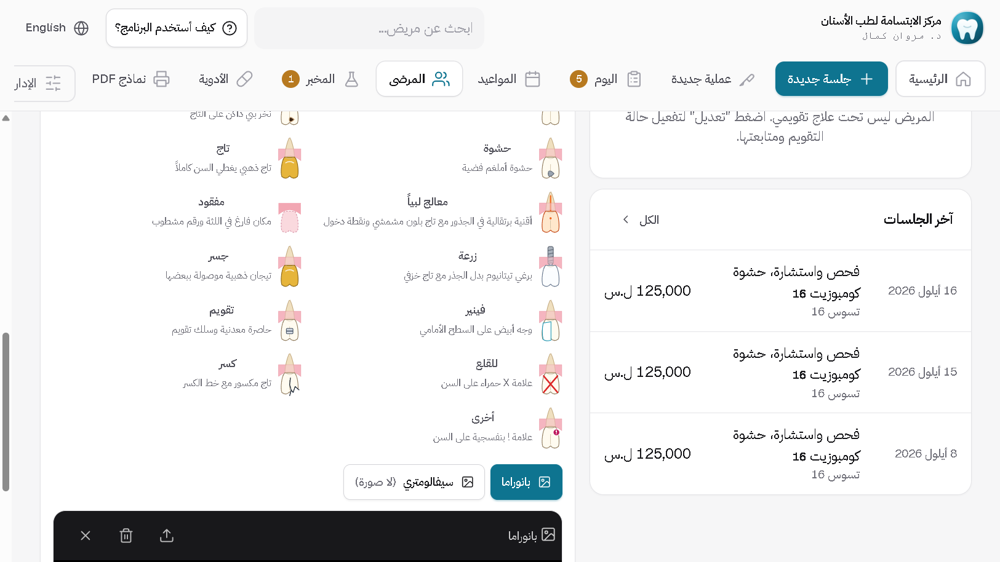
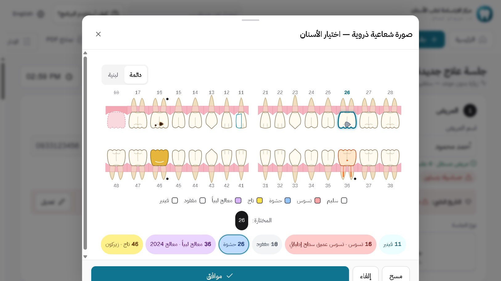
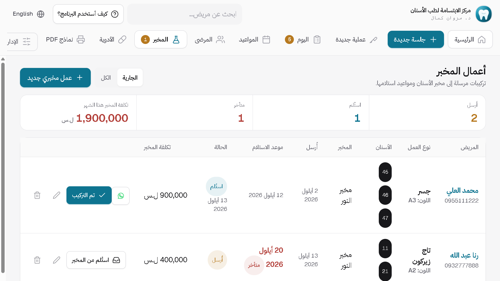
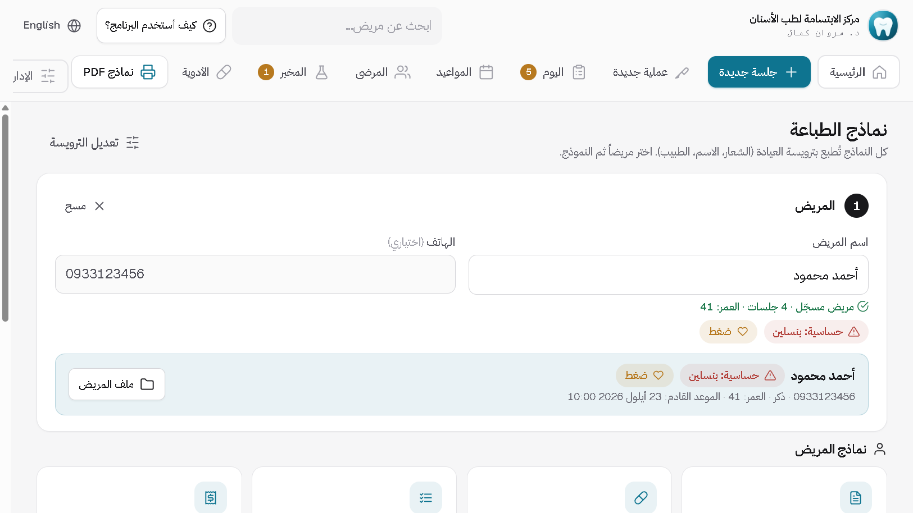

أسنان
من حجز الموعد إلى الإيصال: مخطط أسنان واقعي، جلسات، مخبر، أشعة وأقراص CBCT، ووصفات بترويسة عيادتك.
من داخل البرنامج





ما الذي يفعله
مخطط أسنان واقعي
تيجان وزرعات وجسور كما تبدو في الفم، وأكثر من حالة للسن الواحد. ومخطط الأسنان اللبنية للأطفال.
مواعيد وجلسات
احجز على الأوقات الفارغة، وملف المريض الجديد يُنشأ تلقائياً مع أول موعد.
حساب واضح وذمم
دفع كامل أو جزئي أو ذمة، بالليرة أو الدولار بسعر الصرف الذي تحدده، وإيصال بضغطة.
أشعة وأقراص CBCT
الصور تُربط بالسن الذي صُوّر، وقرص الـ CBCT يُنسخ كاملاً إلى ملف المريض مع برنامج عرضه.
مخبر وعمليات جراحية
تابع كل عمل مخبري بلونه وموعده، واحجز موعد إزالة الخيوط تلقائياً بعد العملية.
تقارير محمية بكلمة مرور
المقبوضات والمصاريف والصافي، مع تصدير Excel. تقارير الشهر والسنة لا تُفتح إلا بكلمة مرورك.
التركيب يستغرق دقيقتين
لا تحتاج خبرة تقنية. حمّل الملف، شغّله، وافتح البرنامج.
نزّل الملف
اضغط زر التحميل في صفحة البرنامج. الملف ينزل إلى مجلد التنزيلات.
شغّل ملف التركيب
اضغط عليه مرتين. إذا ظهرت رسالة من ويندوز، اختر «مزيد من المعلومات» ثم «تشغيل على أي حال».
افتح البرنامج
سيسألك عن اسم العيادة والطبيب والشعار، ثم يصبح جاهزاً للعمل.


غير متأكد أي برنامج يناسبك؟
أرسل رسالة واذكر اختصاص عيادتك، وسأرد عليك بنفسي.